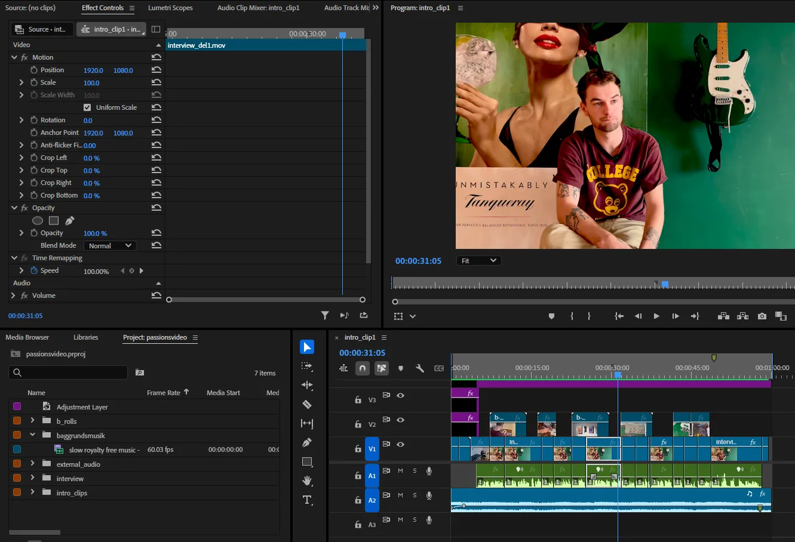

- Videoklippeopgaver
- Passionsvideo
- Passionssite
- Github af Passionssite
- Gruppens Trelloboard
- Gruppens Github
- Virksomhedssite
Tema 5 - Grundlæggende indhold
Dette Tema var en stor omgang, da jeg på kort tid skulle tage stilling til mange ting på en gang. Temaet var nemlig rigtig samarbejdsorienteret med hensyn til at skulle planlægge en masse med sin gruppe. Dette involerer ting, som ofte var nye for alle gruppemedlemmer, så man måtte fælles tage stilling ting tingene sammen og lære hiandens styrker og svagheder. Temaet handlede netop om at interviewe, filme, tage billeder og dermed sidst samle det på et website, som man designer sammen.
Videoklippeopgaver
Vi fik udleveret 2 forskellige videoklippeopgaver, hvilket vi skulle bruge til at øve os i, at bruge premiere pro, korte videoer ned, så kun det vigtigste bliver sagt, og der ikke er en masse unødvendige videoklips. Dette tema var netop en introduktion til Adobe Premiere Pro, og vi skulle ligesom lære, at bruge programmet, men også samtidig lære tekniske teorimæssige informationer om videoklips og redigering. Så disse opgaver var også en måde, hvorpå vi kunne lære at bruge b-roll videoklips og lære at lave transitions imellem 2 videoklips. B-rolls er ekstra videoklip uden lyd, som du sætter på imellem 2 videoklips, så man undgår et hårdt cut imellem de 2 klips, fordi det kan godt være irriterende at se på. Transitions er effekter man bruge til at manipulere med videoklips overgange mellem hinanden, så der kan være en mere glidende eller blid overgang.
Passionsvideo
Denne passionsvideo var et gruppearbejde med en anden studerende, hvor vi tog ud og filmede en person med en passions. Der gik en del forberedelse ind i denne video, fordi jeg både skulle interview en person for første gang og tage billeder og filme med en tripod-holder til telefon for første gang. Denne opgave krævede, at man planlagde, hvordan man ville interview personen, men samtidig overholde visse ting vi lærte om at skyde interview/one minute wonders. Der er blandt andet strukturen om at følge 5-shot-sequence, hvor man har forskellige b-roll klips, som er close-ups af objekter eller interview-personens hænde, fødder eller ansigt. Så kan man derudover have et wide-shot, hvor man set lidt mere af stedet eller personen fra et halvnær perspektiv, og sidst kan man også have et over-the-shoulder shot, hvor man filmer personen bagfra henover skulderen.
Denne metode kunne man så implementere i sit storyboard, som er skitse af hvert af de motiver og framings man følger igennem videoen. Derudover var det klart, at spørgsmålene til interviewed skulle forberedes, og det var vigtigt at have mange forskellige spørgsmål, hvis nu, interview personen skulle svarer på alle spørgsmålene på første svar. Ellers når man skulle interviewe personen var det vigtigt, at man beder personen om at svarer ved at nævne spørgsmålet i sin sætning inden de begynder at tale videre, fordi videoen skal være kort, og kravet var, at man skulle redigere interviewerens spørgsmål ud, så det kun er personen, der bliver interviewed, som man kan høre.
Derudover skulle der være styr på kameraindstillingerne på telefonen, som skulle optages med. Dette gjaldt både med hensyn til at filme og tage billeder i den rigtige opløsning, men også huske at tage billeder på både høj- og bredformat og filme i 25 frames per second, hvilket er den bedste billedehastighed at filme i, i Danmark pga. den hastighed elektricitet bevæger sig, netop så man undgår at lys i lampe flimrer, når man filmer. Sidste ting, man skulle have styr på, når man filmede var, at man sender videoer og billeder til computeren med de rigtige indstillinger, så de konverterer til det mest kompatible fil format og det fylder mindst muligt for bæredygtighedens skyld.
 Link til videoPassionssite
Dette var opgaven til at hjemme en hjemmeside, om sin person med en passion. Man skulle få mest ud af de billeder man tog, så man både havde billeder på høj- og bred format man kunne bruge i et galleri på siden. Derudover skulle man have 2 forskellige måder at importere samme interview video, da der er 2 forskellige måder at gøre det på. Den ene er ved at tage den fra filen på computeren og den anden ved at bruge en embedded kode af videoen på Youtube, som man kan gøre, når man trykker share på videoen.
Derudover skulle man introduceres for Lottiefiles, som er en måde at komprimere simple animationer i Adobe After Effects og eksportere dem i et bæredygtigt filformat, der hedder json, som ikke udleder så meget Co2, som en apng fil. Men denne lottiefile er altså en animation, som skulle være øverst på forsiden af sitet og repræsentere personen med sin passion.
Github af Passionssite
Denne opgave var en introduction til Github, og hvordan man linker Visual Studio Code med Github. Visual Studio Code er det program, der indtil videre er blevet brugt til at kode med HTML, CSS og JavaScript. Github er en server online, som man kan bruge til at gemme sin proces af sin kode. Det er mest til, når man skal kode på den samme hjemmeside med flere mennesker, fordi så er det et vigtigt team værktøj, hvor alle i gruppen nærmest kan holde øje med andres fremskridt live. I denne opgave blev det bare brugt som en test for at se, om det virker, fordi man senere skulle bruge det i grupper.
Gruppens Trelloboard
Denne opgave er et SCRUM Trello Board, som er et projektstyringsværktøj, som bruges til at holde orden i alle opgaver i gruppearbejdet. Netop bliver det brugt til at tildele opgaver til de forskellige gruppemedlemmer, men samtidig er det en måde at holde en tidsplan for, hvor mange opgaver der er, hvor lang tid de vil tage og hvornår forventes der, at alt bliver færdigt. Det er en dynamisk tidsplan, som kan ændre sig fra dag til dag, da man kan sætte flere og flere små opgaver på. Opgaverne bliver nemlig også delt op i små bidder, så de virker mere overskuende og muligt at klare flere opgaver for hver person, hver dag.
Man skal også sørge for at opdatere den samlede mængde af opgaver tilbage hver dag, man møder og samarbejder i gruppen. Dette er en Burndown Chart, som er god til bruge til at forholde ro, orden og overblik på mængden af opgaver, og hvor lang tid vi forestiller os de hver især kommer til at tage at færdiggøre.
Gruppens Github
Dette er netop her, hvor Githubs effektivitet skulle bruges i gruppearbejde med andre studerende. Man sørger for, at alle er med på en fælles server, og herefter, skal man være skarp til at planlægge i gruppen, hvem arbejder på hvilke filer, fordi der kan ske rod i Githubs effektivitet, hvis 2 eller flere mennesker laver ændringer i samme fil. Derfor aftaler man fælles, hvem der arbejder på hvad, og på den måde kan man nå mere kode på kortere tid. Den måde det fungere på er, at hver gang en person har lavet en ændring i deres fil, som er færdig, så sørger de for at “pull”, så de får al andet mulige ændringer fra andre gruppemedlemmer på deres filer og så først derefter kan man selv “push” og tilføje sine ændringer til de andre gruppemedlemmer på serveren. På den måde, så opdaterer de ændrede filer på gruppemedlemmernes computere næste gang de trykker på “pull” knappen.
Virksomhedssite
I denne opgave var det et gruppearbejde på 4 personer, som hver gav deres input og i sidste ende lavede en flot hjemmeside med et rigtig flot design. Det som var nyt i denne opgave var at skulle lære SCRUM og GitHub og bruge det fornuftigt, hvilket vi var dygtige til at udnytte til vores fordel. Vi undgik de store problemer, som kunne ske ved at lave fejl med GitHub, og derudover var vi gode til at følge og opdatere vores SCRUM Trello Board. Egentlig gjaldt denne opgave om at samle alt det, som vi tidligere havde lært fra de forrige temaer, dog fulgte vi ikke nogle specifikke metoder til at beslutte os for vores design udover at lave noget research og lytter til hinanden idéer i gruppen. Der var ikke en rigtig struktur over beslutningerne. Det var bare at illustrere idéerne med det samme. Dette gjorde, at vores proces gik meget hurtigt, og undgik en masse vigtige design faser såsom lightning demos, four step sketch, design sprint decide, low fidelity wireframe og prototype og dermed også pilot think out loud. Derudover sprang vi over at lave likert test på Style tiles, fordi vi selv besluttede os for designet med det samme efter research af andre relevante hjemmesider og andet vietnamesisk design. Vores design proces kan opsummeres som følgende:
- Research
- Idéudvikle ud fra research
- Bliv enige om designs i gruppen
- Lav designs og følgende kom på flere idéer til implementering af flere interaktive eller dekorative elementer
- Lav hifi wireframes
- Lav hifi prototype
- Lav layout diagrammer
- Begynd med at kode sitet
- Lav tests på hifi-prototype
Som sagt, så var den egentlige designproces ikke fuldt fra start til slut, så der blev ikke lavet den helt samme proces som Emnesitet, men vi kan stadig frem til et rigtig flot design, hvilket vi ligesom fik fra research til inspiration, og så diskuterede vi farver og fonte, så vi kunne komme frem til den bedste løsning.
Der var ting, som vi kunne havde gjort bedre i processen, som gjorde, at der er visse få ting på sitet, som kunne forbedres i forhold til indholdet på sitet. Dog tog det ikke væk fra vores meget positive feedback fra både bruger tests og endelige feedback fra underviserne.
Link til sitet